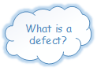
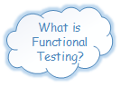

System Test Engineer Workshop
with Nneka Ajufor and May Woo
~~ Icebreaker Time! ~~
♦ What's your name?
♦ What testing experience; if any, what type of testing?
♦ Name one thing you find cool in technology or science.
Our goals today:
- Find some bugs/defects on a simple user interface
- Learn the "Types" of testing used
- Learn basic software testing terminologies/methods


A Software Defect / Bug is a condition in a software product which does not meet a software requirement (as stated in the requirement specifications) or end-user expectations.
Functional Testing is testing an integrated system to verify that it meets specified requirements, based on an analysis of the specification of the functionality of a component or system.
Software life cycle models describe phases of the software cycle and the order in which those phases are executed. Each phase produces deliverables required by the next phase in the life cycle. Requirements are translated into design. Code is produced according to the design which is called development phase. After coding and development the testing verifies the deliverable of the implementation phase against requirements.